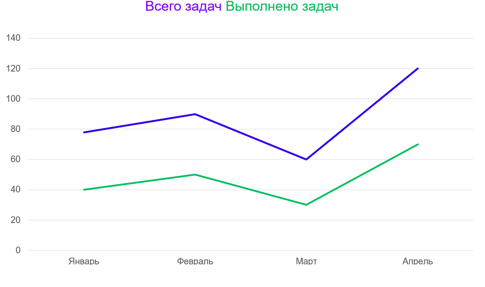

<div *ngIf="(user | async) as user" class="container profile-page">
  <app-profile-card 
    [user]="user"
  >
  </app-profile-card>
  <div>
    <div class="right-part">
        <button mat-raised-button color="primary" (click)="addHelper()">Добавить волонтера</button>
        <button mat-raised-button color="primary" (click)="navigateTo('admin/add_older');">Добавить пожилого человека</button>
    </div>

    <!-- <h3>Карта открытых заданий</h3> -->
    
  </div>
</div>
